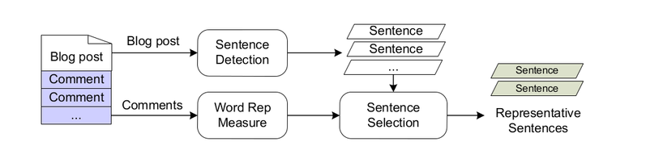

Comments are very important part of blog posts. Most of the research done on blog
summarization didn’t consider comments. Comments gives the general view of
readers and can be used to identify most relevant sentences from original post. The
proposed solution is to derive relevant comments and then retrieve post sentences
mostly referred to by these comments. The relevant comments are identified by
ReT(Response and Topic) graph and named entities similarity score. Followed
by summation-based sentence selection showed promising results.
1. Introduction
Most of the blogs have comments associated with them. A recent study on
blog conversation showed that readers treat comments associated with a post as an
inherent part of the post [2]. These comments gives the general opinion about
the blog post and this knowledge can then be used to extract most relevant sentences
from the blog post.
2. Problem Statement & Related Work
Given a document D consisting of a set of sentences D ={s1 , s2 , . . . , sn }, and a
set of comments C = {c1 , c2 , . . . , cl } associated with D, the task of comments-oriented document summarization is to extract a subset of sentences from D, denoted by Sc (Sc ⊂ D),
that best represents the topic(s) presented in D and discussed among its comments C.
We have referred the ReQuT (i.e., Reader, Quotation,and Topic) model of Meishan Hu, Aixin Sun and Ee-Peng Lim ,Centre for Advanced Information Systems, School of Computer Engineering,Nanyang Technological University, Singapore as the base model for the summary generation.
We have augmented this ReQut with the Named Entity Recognition which is done by the stanford entity tagger (Stanford CoreNLP v1.3.4 – 2012-11-12).
3. Approach
Each word in the comment gets a weight from the different factors. The words that
qualify a certain threshold are considered for the summary generation.
The factors are as follows :
A. Representative words extraction from
comments:
Reader's authority:
The reader's authority is calculated as the number of distinct user that post a reply to
the users comment.
Contribution to the weight of the term = tf(term,ci) * A(ci)
where,
tf(term,ci) is the term frequency of
the word in the comment ci
A(ci) is the authority author of the
comment ci
Likes count: The number of likes to a comment
Contribution to the weight of the term = L(Ci)
where,
L(Ci) = number of likes on the comment
Cluster: we have a algorithm that clusters the comments and a weight is assigned to a
cluster.
Contribution to the weight of the term = tf(term,ci)*W(ci)
where,
tf(term,ci) is the term frequency of the word in the comment ci
W(ci) weight of the cluster to which the comment belongs
Reply count : The number of replies a comment has got.
Contribution to weight of the term = Rep(Ci)
where,
Ci = number of replies to the comment Ci
Named Entity: All the named entities of blog post are identified by using Stanford
CoreNLP[2]. For each comment Named Entity Score E(Ci) is calculated as :
E(Ci) = Number of named entities in that comment
Contribution to the weight of the term = E(Ci)
B. Top sentence extraction from Blog post:
The blog is divided into sentences.
Each sentence is then represented by a bag of words and weightage is given by
W(Si)=Sum(W(Ti))|Ti belongs to Si
where,
W(Si) = weightage of the sentence Si
W(Ti) = weightage of the term Ti as
calculated in A.
A number of top weighted sentences is shown as the summary.
3.1. Assumptions
Proposed Solution gives a good output summary for long blog posts and sufficient number of comments associated with it.
3.2. Architecture
Given a blog post and its comments, our solution consists of three modules (illustrated in the Figure below):
Sentence detection : splits blog post content into sentences.
Word representativeness : measure weighs words appearing in comments.
Sentence selection : computes a representativeness score for each sentence based on representativeness of its contained words.

Approach for summarizer
4. Evaluation and Results
Selected Blog Statistics Table:
Blog ID
Words in Post
Words in Manual Summary
No. of Comments
1
812
216
22
2
1516
352
4
3
1341
214
57
4
856
261
45
5
846
230
8
6
3656
453
52
7
414
137
43
8
1256
334
76
9
258
98
23
10
849
238
29
F-Score (25%) Table:
Blog ID
ROUGE-1
ROUGE-2
ROUGE-F
1
0.55769
0.47573
0.53846
2
0.47126
0.35057
0.41429
3
0.5534
0.42718
0.49216
4
0.67358
0.55498
0.66321
5
0.42361
0.20139
0.44444
6
0.52381
0.47159
0.53403
7
0.61398
0.54795
0.40884
8
0.58707
0.43216
0.55722
9
0.70025
0.52525
0.75
10
0.51196
0.36792
0.54286
5. Conclusion
Our proposed solution gives a good score for long blog posts and sufficient number of comments associated with it.
References
Meishan Hu, Aixin Sun and Ee-Peng Lim "Comments-Oriented Blog Summarization by Sentence Extraction"